01 · Мишаня (спереди и со спины)
Текущая версия.
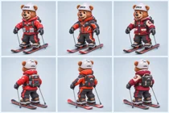
Мишаня в меню и на спуске. Три прыжка в левой половине видео.
studies/bear.glb
02 · Белая Сова (спереди и со спины)
Текущая версия.
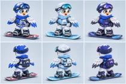
Сова на доске, три прыжка в правой половине видео.
studies/owl.glb
03 · Пара лыж
Текущая версия.
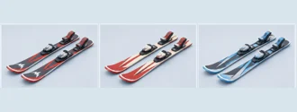
Лыжи и крепления следуют за ботинками.
studies/bear.glb
04 · Сноуборд
Текущая версия.
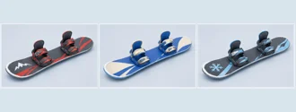
Доска следует за лапами во всех фазах.
studies/owl.glb
05 · Пара лыжных палок
A
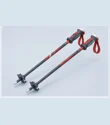
Палки с тёмными древками и красными темляками закреплены в перчатках.
studies/bear.glb
06 · Лыжник
Текущая версия.
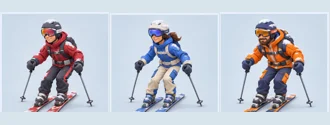
Лыжник на левой стороне вершины.
npc.js · skier
07 · Ребёнок на лыжах
Текущая версия.
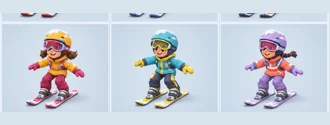
Ребёнок на правой стороне вершины.
npc.js · kid
08 · Сидящий лыжник
Текущая версия.
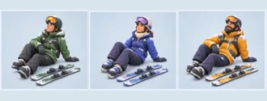
Сидящий лыжник у левого края.
npc.js · sitter
09 · Юный сноубордист
A / C
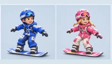
Синяя и малиновая куртки на разных выездах.
npc2.js · sboy
10 · Взрослый сноубордист
C
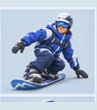
Синий взрослый сноубордист справа.
npc2.js · sman
11 · Инструктор на доске
A
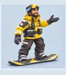
Инструктор в жёлтой куртке слева.
npc2.js · sinstr
12 · Ратрак
A и исходный ратрак
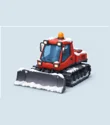
Исходный ратрак и короткий ратрак с отвалом.
npc.js + training-cast.glb
13 · Лесной патруль
C
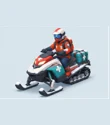
Бирюзово-белый патруль с красным кофром выезжает из леса.
forest-patrol.glb
14 · Снегоход игрока
A
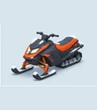
Герой управляет снегоходом в бонусе «Снежная доставка».
player-sled.glb
15 · Кресло подъёмника
Текущая версия.
Кресла идут по линии подъёмника на внешней стороне трассы.
npc2.js · chair
16 · Опора подъёмника
C
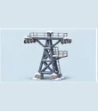
Решётчатая опора и блоки шкивов.
course-kit.glb · tower16C
17 · Трос подъёмника
Текущая версия.
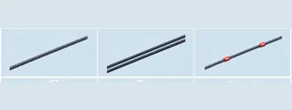
Трос соединяет соседние опоры.
index.html · liftAnchor
18 · Фонарь
A / B / C
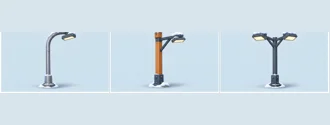
Вдоль обочин чередуются стальная, деревянная и двусторонняя опоры.
course-kit.glb · lamp18A/B/C
19 · Заснеженная ель
A / B / C
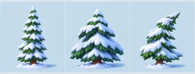
Высокая, широкая и наклонённая ель. Дальние ряды используют рисунки 19A/B/C.
course-kit.glb · tree19A/B/C
20 · Высокая сосна
A / B / C
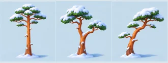
Прямая, развилистая и наклонённая сосна.
course-kit.glb · tree20A/B/C
21 · Молодая ель
A / B / C
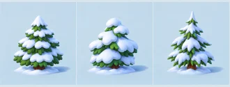
Три молодых ели у проездов и на внешней опушке.
course-kit.glb · tree21A/B/C
22 · Обычный трамплин
A
Обычный трамплин с оранжевыми стойками.
trees.js · ramp
23 · Широкий валун
A
Широкий низкий валун у правого края.
winter.js · rock_wide
24 · Высокий валун
B
Узкий камень с поднятой вершиной слева.
winter.js · rock_tall
25 · Снежная пушка
A
Жёлтая пушка с тёмным соплом у правой обочины.
course-kit.glb · cannon25A
26 · Снеговик
A / B / C
Шапка с помпоном, цилиндр и синие наушники на учебном склоне.
training-cast.glb · snow26A/B/C
27 · Горная собака
B
Пятнистая собака в спасательном жилете перебегает трассу.
winter.js · dog
28 · Йети
C
Низкий белый йети выходит с края на следы, шагает и машет.
winter.js · yeti
29 · Летящая золотая сова
Убрать из игры на этот этап. Бонусы открывает перо 36B.
В игровых фабриках и спавне летящей золотой совы нет. Оба бонуса открывает 36B.
Отключена
30 · Мандаринка
Текущая версия.
Первая цепочка на учебном склоне.
props.js · mandarin
31 · Кофе
Текущая версия.
Кружка за первыми синими воротами.
props.js · cocoa
32 · Каска
Текущая версия.
Каска на тренировочной прямой.
props.js · helmet
33 · Подарок
Текущая версия.
Подарок справа на вершине, также встречается в доставке.
winter.js · gift
34 · Магнит
B
Красная подкова с голубыми вставками.
course-kit.glb · magnet34B
35 · Аптечка патруля
Текущая версия.
Белый кейс патруля у обочины. В обычном спуске кейс также лежит возле упавшего.
rescue-case.glb
36 · Золотое перо
B
Заход начинается на 7650 м. На высокой линии нужно сделать два трюка и пересечь перо.
prize-feather.glb
37 · Коллекционная буква
B
Золотой шестигранник. Буква и дистанция следующего появления зависят от прогресса коллекции.
index.html · FACT.letter
38 · Красные ворота
C
Красные мягкие стойки с флагами.
index.html · FACT.gate
39 · Синие ворота
C
Синие мягкие стойки с флагами.
index.html · FACT.gate
40 · Воздушное кольцо
A / B / C
Синий с золотом, радужный и ледяной ободы на трёх линиях парка.
index.html · FACT.airRing
41 · Защитная сетка
A / B / C
Красная, жёлтая и оранжевая сетки с отличающимися стойками.
index.html · FACT.fence
42 · Указатель леса
A
Зелёный указатель с елью перед лесом.
index.html · FACT.stageProp
43 · Указатель бугров
A
Охристый указатель с гребнями у поля бугров.
index.html · FACT.stageProp
44 · Указатель парка
A
Синий указатель с райдером перед высокой линией.
index.html · FACT.stageProp
45 · Арка этапа
A
Деревянная арка с крышей перед сменой этапа.
index.html · FACT.arch
46 · Финиш
A
Клетчатый финиш короткого спуска на 1200 м.
index.html · FACT.finish
47 · Бокс
B
Оранжевый бокс сбоку от прыжковой линии.
index.html · makeParkSurface
48 · Трамплин сноупарка
C
Тёмный борт и жёлтая кромка трамплина. Снаряжение поднимается по поверхности.
index.html · makeParkSurface
49 · Один бугор
A / B / C
Низкая круглая кочка, высокий наклонный бугор и асимметричный со вторым плечом.
index.html · FACT.mogul
50 · Поле гребней
A / B / C
Три поля с разным шагом гребней и свободной центральной ложбиной.
index.html · addMogulPatch
51 · Дальний посёлок
C
Посёлок виден между деревьями, за первыми воротами и на следующем открытом склоне.
art/slope/village-51c.webp
52 · Горы и долина
A / B / C
Три силуэта формируют панораму. Повороты камеры открывают разные стороны долины.
art/slope/ridge-52a/b/c.webp
53 · Полотно трассы
A / B / C
Синие маркеры на учебной трассе, защитные сетки на буграх, голубые линии в парке.
index.html · fitPlane
54 · Северное сияние
A / B / C
Три цветовые ленты на разных азимутах ночного неба.
art/slope/aurora-54a/b/c.webp
55 · Следы лыж
C
Две борозды идут за лыжами во время движения. Нажмите «Поехать».
index.html · trackMesh
56 · Следы йети
C
Голубые отпечатки видны перед выходом йети.
art/slope/yeti-print-56c.webp
57 · Снежок
B
Нажмите «Поехать». Снеговик на 10055 м замахивается и бросает комок.
art/slope/snowball-57b.webp + snowballGeo
58 · Снежные частицы
A
Снежная крошка появляется в момент посадки. Видна в видео обычного прыжка.
art/slope/snow-chips-58a.webp
59 · Счёт, каски и мандарины
B
Стеклянное табло, три значка касок, мандарин и живые счётчики.
race-hud.js + art/slope/hud-59b.webp
60 · Мужчина на плюшке
B / C
Мужчины на янтарной и зелёной плюшках.
training-cast.glb · tube60B/C
61 · Женщина на плюшке
A / C
Женщины на синей и малиновой плюшках.
training-cast.glb · tube61A/C
62 · Трасса для плюшек
A / B / C
Открытый снежный склон, лесная долина и закат над бухтой.
art/slope/tubing-62a/b/c.webp